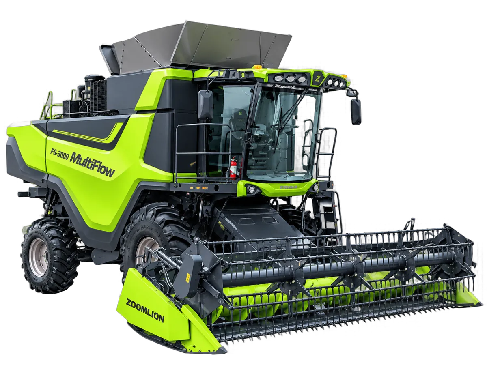

Combine Harvester
Zoomlion F6-3000
Combine harvester serealia swagerak multi-komoditas berefisiensi tinggi yang dirancang untuk pertanian komersial
Bandingkan dengan unit lain →Keunggulan
- Kecepatan panen lebih tinggi dengan kehilangan gabah yang berkurang
- Mutu gabah terjaga lebih baik dengan operasi yang stabil
- Satu mesin untuk beragam aplikasi panen: mudah beradaptasi dengan berbagai jenis tanaman tanpa modifikasi besar
- Memaksimalkan pemanfaatan alat dengan mendukung beberapa musim panen sepanjang tahun
Spesifikasi
| Kapasitas Umpan | 15 kg/s |
|---|---|
| Dimensi | 8.225 × 3.650 × 3.975 mm (tanpa header) |
| Berat Operasi | 13.248 kg (tanpa header) |
| Model Mesin | YCA07K300-T300 / YCA08300-S301 |
| Tipe Mesin | 6 Silinder |
| Kapasitas Tangki BBM | 605 L |
| Sistem Perontokan | Tangential Separation + Twin Axial Rotors |
| Ukuran Drum Perontok | ø480 × 3.180 mm |
| Putaran Drum Perontok | 368–1.137 rpm |
| Luas Area Separasi | 4,3 m² |
| Sistem Pembersihan | Air & Sieve Cleaning System |
| Kapasitas Hopper | 8,8 m³ |
| Kecepatan Pembongkaran | 55 L/s |
| Ukuran Ban | 380/85R26 / 750/65R26 |
| Sistem Gerak | Hydraulic On-Demand 4WD |
| Rigid Grain Header | 6,6 m — 2.150 kg |
| Soybean Flex Header | 5,6 m — 1.150 kg |
| Corn Header | 6 / 8 baris |
Untuk Siapa Zoomlion F6-3000?
Zoomlion F6-3000 adalah combine harvester serealia berkapasitas besar untuk pertanian komersial. Kapasitas umpan 15 kg/detik, sistem perontokan tangential separation dengan dua rotor aksial, dan hopper 8,8 m³ membuatnya mampu memanen area luas dalam waktu singkat.
Mesin ini cocok untuk perusahaan pertanian dan pengusaha jasa panen yang menangani beberapa jenis tanaman. Dengan header yang dapat diganti, yaitu rigid grain header 6,6 m, soybean flex header 5,6 m, dan corn header 6 atau 8 baris, satu mesin bisa dipakai untuk gandum, kedelai, dan jagung sepanjang tahun.
Pertimbangan Sebelum Memilih
- Penggerak hidrolik 4WD on-demand membantu traksi di lahan basah atau bergelombang.
- Tangki BBM 605 L memungkinkan jam kerja panjang tanpa sering mengisi ulang.
- Berat operasi sekitar 13,2 ton tanpa header; perhatikan akses jalan dan jembatan menuju lahan.
- Kecepatan bongkar 55 L/detik mempercepat pemindahan gabah ke truk.
Who Is the Zoomlion F6-3000 For?
The Zoomlion F6-3000 is a high-capacity grain combine for commercial farming. A 15 kg/s feed rate, tangential separation with twin axial rotors, and an 8.8 m³ hopper let it harvest large areas quickly.
It suits agricultural companies and harvesting contractors handling several crops. With interchangeable headers, a 6.6 m rigid grain header, 5.6 m soybean flex header, and 6- or 8-row corn header, one machine can harvest wheat, soybeans, and corn throughout the year.
Things to Consider
- Hydraulic on-demand 4WD helps traction in wet or uneven fields.
- 605 L fuel tank supports long working hours with fewer refills.
- Operating weight is about 13.2 tonnes without header; check road and bridge access to your fields.
- 55 L/s unloading speed shortens grain transfer to trucks.
Zoomlion F6-3000适合谁？
中联重科F6-3000是一款面向商业化农场的大喂入量谷物联合收割机。15公斤/秒喂入量、切流加双纵轴流脱粒系统以及8.8立方米粮仓，可在短时间内完成大面积收获。
适合需要收获多种作物的农业企业和跨区收割服务商。可更换割台：6.6米刚性谷物割台、5.6米大豆挠性割台以及6行或8行玉米割台，一台机器全年可收小麦、大豆和玉米。
选购要点
- 液压按需四驱，在湿地或起伏地块中保持牵引力。
- 605升油箱，减少加油次数，延长连续作业时间。
- 不含割台作业重量约13.2吨，请确认通往地块的道路和桥梁条件。
- 卸粮速度55升/秒，加快向运粮车转运。
Tanya harga & ketersediaan unit
Tim kami siap membantu memilih unit yang sesuai kebutuhan lahan Anda.